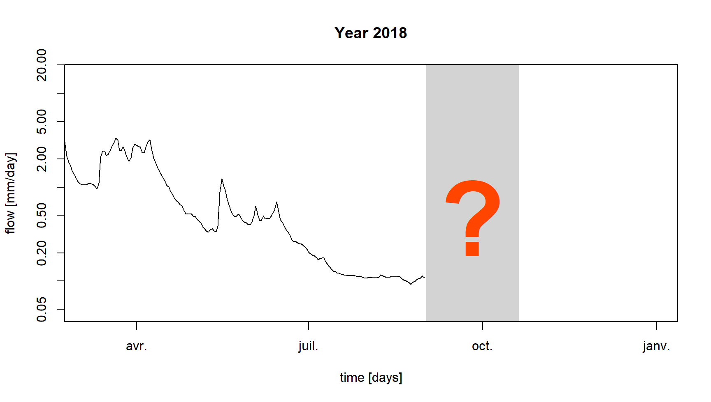
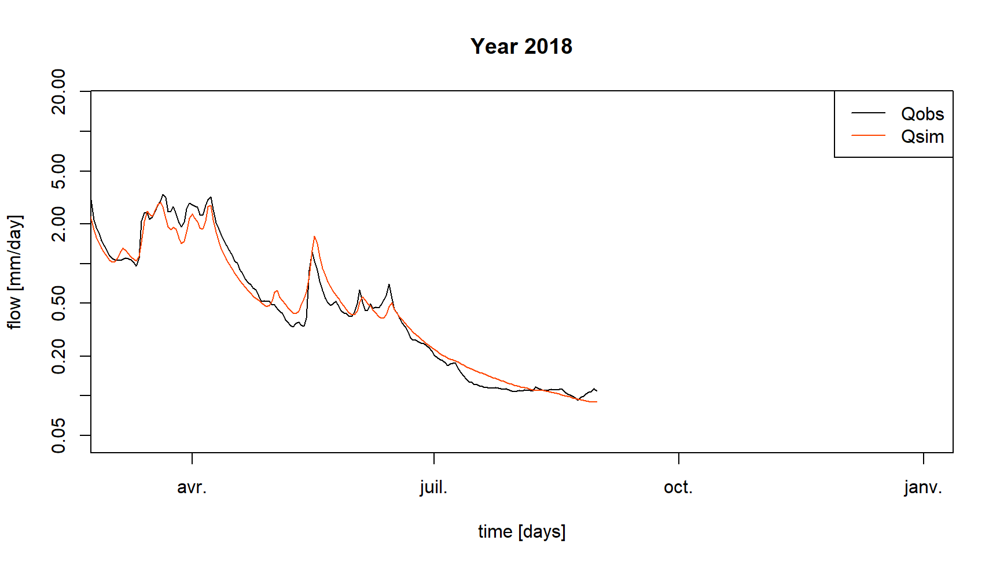
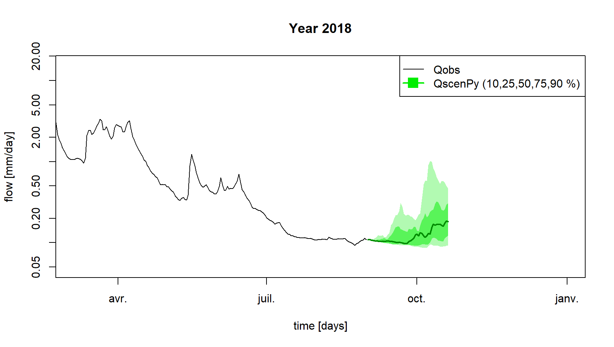
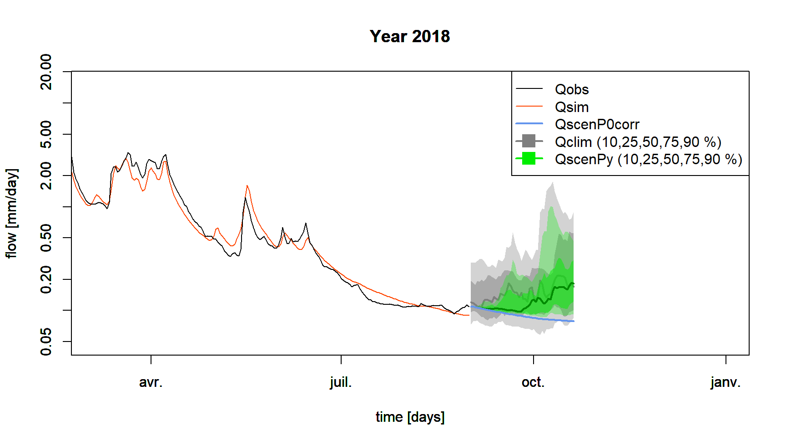

Low-flow forecasting
Pierre Brigode & Olivier Delaigue
1 Objective
1.1 Context
End of summer 2018, the river Meuse at Saint-Mihiel has reached its lowest level for several years and the rain is still awaited for on this catchment characterized by many water uses in summer. In charge of the monitoring of the streamflows in period of low-flow, you have been called by the local officials who are panicking about the drought situation and ask you to produce an estimate of the streamflows of the river for the next weeks.
Unfortunately, you have not received the weather forecast from the regional forecasting service for several weeks… You do not have any forecast of the coming precipitation, but you still have to quantify the possible streamflows on the catchment for the next weeks.
The exercise consists in using the available hydro-climatic data (at daily time step) on Meuse at Saint-Mihiel (2543 km²), and a rainfall-runoff model to forecast the streamflows of the coming weeks by using (1) the last observed streamflow on the considered catchment, (2) the observed precipitation climatology and (3) the observed streamflow climatology. This information will provide ranges of potential streamflows for the coming weeks (see following figure).
This work will be completed in four steps:
- Statistical analysis of the streamflow climatology to obtain an order of magnitude of the streamflows historically observed during the study period, i.e. the daily streamflow regime.
- Calibration of the hydrological model on the historical period considering a criterion centered on low flows.
- Pessimistic scenario of zero precipitation: rainfall-runoff simulation over the summer studied from the last observed streamflow considering no future precipitation and a series of potential evapotranspiration (PE) constituted from the interannual average PE.
- Non-zero future precipitation scenarios: rainfall-runoff simulations for the studied summer based on the last observed discharge by hindcasting the precipitation climatology, i.e. the precipitation observed during the other summers. There will be as many simulations as there are historical years.

1.2 Instructions
This section aims to make explicit some of the expected tasks and to describe the hydrological model calibration and simulation conditions (parameter calibration period, reservoir initialization periods, calibration criteria, etc.).
1.2.1 Analysis of streamflow climatology
In a hydrological forecasting context, “flow climatology” refers to the streamflow regime, i.e. the series of interannual mean streamflows. If you want to forecast the streamflow of the day to come (for example on 1 September), the simplest forecast from a technical point of view consists in calculating the average of the streamflows observed on this day during the past years. This average can also be framed thanks to the calculations of quantiles of these same historical streamflows (for example the quantiles 10 and 90 %), which makes it possible to have a first “probabilistic” estimate of the future streamflows, without carrying out rainfall-runoff modelling and without using a precipitation forecast.
In this exercise, you analyze all the streamflows observed during the forecast period (from 1 September 2018 to 20 October 2018) during the previous years. 20 years are available for this analysis, which allows to constitute 20 series of historical daily streamflows for the forecast period. Once grouped in a single table, these streamflows can be summarized by calculating quantiles such as 10, 25, 50, 75 and 90 % quantiles for each day considered. These quantiles will then be used as a first estimate of future streamflows.
1.2.2 Rainfall-runoff model
You will use the GR6J model (Pushpalatha et al. 2011). It is a lumped rainfall-runoff model, operating on a daily time step and having six parameters. It requires continuous time series of daily precipitation and potential evapotranspiration (PE) as input.
This model is easily usable thanks to the airGRteaching package (Delaigue, Coron, and Brigode 2022; Delaigue et al. 2018), developped for the R software by the Catchment Hydrology research group of the HYCAR reaserch unit (INRAE, France).
The time series of observed precipitation, PE and streamflow can be
easily formatted using the PrepGR() function. A
rainfall-runoff simulation can be performed with the
SimGR() function, and a parameter calibration using the
CalGR().
1.2.3 Calibration (and warm-up) period
Initialization is particularly important in a context of hydrological forecasting by modelling: this warm-up consists in estimating the saturation state of the basin (i.e. the internal states of the model) which will then be used as initial conditions for all the tested scenarios. These scenarios are all based on the same state at the date of launching the forecasts.
The period to be considered to calibrate the parameters of the model on Meuse at Saint-Mihiel catchment starts on 1 September 2000 and ends on 31 August 2018. A warm-up period of 20 months should also be considered from 1 January 1999 to 31 August 2000.
1.2.4 Calibration criterion
The calibration criterion to be considered in this exercise is the Nash and Sutcliffe criterion (Nash and Sutcliffe 1970) calculated on the natural logarithms of the streamflows, noted \(NSE_{ln}\) hereafter (see following equation). This criterion is widely used in hydrological modelling.
The NSE criterion, bounded between \(-\infty\) and \(1\), allows to quantify the performance of a model in a relative way, by comparing a series of simulated streamflows with a so-called “naive” model, here the average of the observed streamflows (i.e. a series of streamflows constituted in each time step by the average of the observed streamflows). Thus, a NSE value equal to 1 indicates a perfect agreement between the series of observed and simulated streamflows (which is never the case), whereas a NSE value lower than 0 means that the simulation considered is less efficient than the simulation of the “naive” model. The calculation of \(NSE_{ln}\) is detailed in the following equation, where \(Q_{obs,t}\) is the observed streamflow at time step \(t\), \(Q_{sim,t}\) is the simulated streamflow at time step \(t\), \(\overline{Q_{obs}}\) is the average of the observed streamflows, \(\epsilon\) is a constant defined below, and \(n\) is the number of observations:
\[\begin{equation} NSE_{ln} = 1-\frac{\sum_{t=1}^{n}(ln(Q_{obs,t}+\epsilon)-ln(Q_{sim,t}+\epsilon))^{2}}{\sum_{t=1}^{n}(ln(Q_{obs,t}+\epsilon)-\overline{ln(Q_{obs}+\epsilon)})^{2}} \end{equation}\]
The calculation of the \(\epsilon\) value is detailed in the following equation. The addition of this \(\epsilon\) is necessary when zero streamflows are present in the observed streamflow series.
\[\begin{equation} \epsilon=\frac{\overline{Q_{obs}}}{100} \end{equation}\]
The logarithmic transformation allows to give more weight to the lowest streamflows, and thus to limit the errors made on the simulation of low flows (Ludovic Oudin et al. 2006). Considering a series constituted by the inverse of the streamflows during the calibration is also recommended to obtain a good performance during the simulation of very low flows (Pushpalatha et al. 2012).
The elements necessary for the calculation of the calibration
criterion have to be set as arguments of the CalGR()
function, which allows to specify if the criterion must be calculated on
“transformed” streamflows with the transfo argument (here
equal to "log").
1.2.5 Automatic calibration of the model parameters
Automatic parameter estimation aims at using a search algorithm in the parameter space. This algorithm will automatically generate sets of parameters, test them, and generate others according to the performance of those already tested, until converging to an optimum. The algorithm developed by Michel (1991) will be used in this exercise.
1.2.6 Simulation period
The simulation period, which can also be called the forecast period in this exercise, runs from 1 September 2018 to 20 October 2018. The set of time steps preceding this calibration period can be used as the warm-up period.
1.2.7 Pessimistic scenario of zero precipitation
Having a rainfall-runoff model calibrated on the studied catchment allows to use future precipitation scenarios and to transform them into streamflow scenarios. The simplest scenario to test (and the most pessimistic one) is the so-called “zero precipitation” scenario: no precipitation will be observed over the time steps of the forecast period. This will be the lower bound of the rainfall-runoff modelling forecast.
To implement this scenario in the airGRteaching environment, it is necessary to create a “dummy” data table containing a time series of precipitation equal to 0 over the forecast period. For PE, a realistic assumption is to use the interannual regime of this variable. Thus, for each forecast day, the interannual average value of observed PE will be used: the PE of 1 September for this scenario will be equal to the average of observed PE values for all past 1 September.
1.2.8 Non-zero future precipitationscenario
This last step aims at performing several rainfall-runoff simulations considering non-zero future precipitation scenarios. These precipitation scenarios will be constructed from historical precipitation data. 20 years of past precipitation are available for this analysis, which allows to build 20 scenarios of historical daily precipitation and PE for the forecast period. A rainfall-runoff simulation will be performed for each of these past years, starting the simulation with the same warm-up period. Once grouped in a single table, the simulated streamflows can be summarized by calculating quantiles such as 10, 25, 50, 75 and 90 % quantiles for each day considered. These quantiles will then be used as an indication of possible future streamflows.
1.3 Data available
The data set available to the rainfall-runoff modelling consists of:
- a time series of daily total precipitation (liquid + solid) [mm/day]
(
Ptot); - a time series of daily potential evapotranspiration calculated with
the L. Oudin et al. (2005) formula
[mm/day] (
Evap); - a time series of daily streamflows expressed as a specific discharge
[mm/day] (
Qmmd).
2 Command lines for the production of simulations
2.1 Loading and formatting of data
The following command lines are used to prepare the data required to calibrate the rainfall-runoff model, and to define the working periods (initialization period, calibration period and forecast period).
# Calibration period
per_cal_hist <- c("2000-09-01", "2018-08-31")
# Forecasting period
per_fcst <- c("2018-09-01", "2018-10-20")
# Warm-up period to simulate on the historical period
per_wup_hist <- c("1999-01-01", "2000-08-31")
# Warm-up period to simulate on the forcasting period
per_wup_fcst <- c(per_wup_hist[1], per_cal_hist[2])
# Forecasting dates
dates_fcst <- seq(from = as.POSIXct(per_fcst[1], tz = "UTC", format = "%Y-%m-%d"),
to = as.POSIXct(per_fcst[2], tz = "UTC", format = "%Y-%m-%d"),
by = "1 day")
head(dates_fcst)## [1] "2018-09-01 UTC" "2018-09-02 UTC" "2018-09-03 UTC" "2018-09-04 UTC" "2018-09-05 UTC" "2018-09-06 UTC"# Formatting of forecast dates (Month-Day)
month_day_fcst <- format(dates_fcst, "%m-%d")
head(month_day_fcst)## [1] "09-01" "09-02" "09-03" "09-04" "09-05" "09-06"2.1.1 Initial time series
# Catchment data loading
library(airGRdatasets)
data("B222001001", package = "airGRdatasets")
# Ctachment area
area <- B222001001$Meta$Area
# Observed daily time series
ts_init <- B222001001$TS
# Add date information to the time series
ts_init$Year <- format(ts_init$Date, format = "%Y")
ts_init$MonthDay <- format(ts_init$Date, format = "%m-%d")
# Display of the 1st time steps of the time series
head(ts_init)## Date Ptot Temp Evap Qls Qmmd Year MonthDay
## 14764 1999-01-01 0.1 3.0 0.3 33200 1.128 1999 01-01
## 14765 1999-01-02 5.8 5.5 0.4 31400 1.067 1999 01-02
## 14766 1999-01-03 5.3 5.6 0.4 30700 1.043 1999 01-03
## 14767 1999-01-04 1.2 9.1 0.5 32000 1.087 1999 01-04
## 14768 1999-01-05 0.0 9.1 0.5 41200 1.400 1999 01-05
## 14769 1999-01-06 0.1 7.2 0.5 44200 1.502 1999 01-062.1.2 Ploted time series
# Set values of the last winter to missing data
ts_plot <- ts_init
isd_wint <- ts_plot$Date >= as.POSIXct(per_fcst[1], tz = "UTC", format = "%Y-%m-%d")
ts_plot[isd_wint, c("Ptot", "Temp", "Evap", "Qls", "Qmmd")] <- NA
# Display of the last time steps of the time series
tail(ts_plot)## Date Ptot Temp Evap Qls Qmmd Year MonthDay
## 22063 2018-12-26 NA NA NA NA NA 2018 12-26
## 22064 2018-12-27 NA NA NA NA NA 2018 12-27
## 22065 2018-12-28 NA NA NA NA NA 2018 12-28
## 22066 2018-12-29 NA NA NA NA NA 2018 12-29
## 22067 2018-12-30 NA NA NA NA NA 2018 12-30
## 22068 2018-12-31 NA NA NA NA NA 2018 12-312.1.3 Observed time series
# Select the time series over the observed period (no "future" dates)
ts_hist <- ts_plot[ts_plot$Date < dates_fcst[1], ]
# Display of the last time steps of the time series
tail(ts_hist)## Date Ptot Temp Evap Qls Qmmd Year MonthDay
## 21941 2018-08-26 0.1 13.4 2.5 2910 0.099 2018 08-26
## 21942 2018-08-27 0.6 16.5 2.9 3040 0.103 2018 08-27
## 21943 2018-08-28 0.0 18.3 3.1 3140 0.107 2018 08-28
## 21944 2018-08-29 14.6 17.1 2.9 3170 0.108 2018 08-29
## 21945 2018-08-30 0.7 15.1 2.6 3330 0.113 2018 08-30
## 21946 2018-08-31 0.7 13.8 2.4 3220 0.109 2018 08-312.1.4 Forecast time series
# Select the time series after the observed period (only "future" dates)
ts_fcst <- ts_plot[ts_plot$Date >= dates_fcst[1] & ts_plot$Date <= dates_fcst[length(dates_fcst)], ]
# Display of the 1st time steps of the time series
head(ts_fcst)## Date Ptot Temp Evap Qls Qmmd Year MonthDay
## 21947 2018-09-01 NA NA NA NA NA 2018 09-01
## 21948 2018-09-02 NA NA NA NA NA 2018 09-02
## 21949 2018-09-03 NA NA NA NA NA 2018 09-03
## 21950 2018-09-04 NA NA NA NA NA 2018 09-04
## 21951 2018-09-05 NA NA NA NA NA 2018 09-05
## 21952 2018-09-06 NA NA NA NA NA 2018 09-062.2 Analysis of streamflow climatology
The following command lines allow the analysis of the streamflow climatology by calculating the interannual streamflow quantiles over the forecasting period:
# Calculation of the historical streamflow quantiles
ts_qclim_quant <- aggregate(Qmmd ~ MonthDay,
data = ts_hist[ts_hist$MonthDay %in% month_day_fcst, ],
FUN = function(x) {
quantile(x, probs = c(0.10, 0.25, 0.50, 0.75, 0.90))
})
ts_qclim_quant <- as.data.frame(ts_qclim_quant$Qmmd)
colnames(ts_qclim_quant) <- paste0("Q", gsub("\\D", "", colnames(ts_qclim_quant)))
rownames(ts_qclim_quant) <- month_day_fcst
# Display of the 1st calculated quantiles
head(ts_qclim_quant)## Q10 Q25 Q50 Q75 Q90
## 09-01 0.0736 0.0965 0.120 0.1925 0.2958
## 09-02 0.0786 0.0990 0.118 0.1850 0.2894
## 09-03 0.0790 0.0980 0.114 0.1770 0.2892
## 09-04 0.0806 0.0955 0.110 0.1910 0.3008
## 09-05 0.0770 0.0905 0.109 0.1890 0.3128
## 09-06 0.0748 0.0870 0.107 0.1995 0.3172The streamflow climatology allows to obtain a first order of magnitude of the possible streamflows of the next days (cf. following figure), but does not allow to account for the last observed streamflows.

2.3 Data processing for GR6J
The following command lines aim to prepare the available data for use
by GR6J, using the PrepGR() function of the
airGRteaching package.
# Adding an epsilon to observed streamflows for criterion calculation
epsilon_qobs <- mean(ts_hist$Qmmd, na.rm = TRUE) / 100
# Data processing for GR6J
prep_hist <- PrepGR(DatesR = ts_hist$Date,
Precip = ts_hist$Ptot,
PotEvap = ts_hist$Evap,
Qobs = ts_hist$Qmmd + epsilon_qobs,
HydroModel = "GR6J",
CemaNeige = FALSE)2.4 GR6J calibration on the historical period
The following command lines are used to calibrate the GR6J model on the historical period.
# Calibration step
cal_hist <- CalGR(PrepGR = prep_hist,
CalCrit = "NSE",
WupPer = per_wup_hist,
CalPer = per_cal_hist,
transfo = "log",
verbose = TRUE)## Grid-Screening in progress (0% 20% 40% 60% 80% 100%)
## Screening completed (729 runs)
## Param = 49.402, -0.521, 148.413, 2.345, 0.020, 20.086
## Crit. NSE[log(Q)] = 0.9170
## Steepest-descent local search in progress
## Calibration completed (56 iterations, 1402 runs)
## Param = 194.102, -0.369, 27.124, 4.485, 0.289, 9.183
## Crit. NSE[log(Q)] = 0.9638# Get parameter and criterion values
param_cal_hist <- GetParam(cal_hist)
crit_cal_hist <- GetCrit(cal_hist)
# Graphical assessment of the calibration performance
plot(cal_hist)
The six parameters and the value of the calibration criterion (\(NSE_{ln}\)) obtained after the automatic calibration procedure are:
- X1 = 194 [mm]
- X2 = -0.369 [mm/day]
- X3 = 27 [mm]
- X4 = 4.485 [day]
- X5 = 0.289 [-]
- X6 = 9.18 [mm]
- \(NSE_{ln}\) = 0.964 [-]
The performance obtained in calibration is very good, since the criterion \(NSE_{ln}\) is equal to 0.964.
The following command lines allow to store in the same table the observed streamflows and the simulated streamflows with the set of parameters obtained by automatic calibration, in order to compare them.
# Combination of observed and simulated streamflow time series on the calibration period
ts_cal_hist <- as.data.frame(cal_hist)
head(ts_cal_hist)## Dates PotEvap PrecipObs PrecipFracSolid_CemaNeige TempMeanSim_CemaNeige Qobs Qsim
## 1 2000-09-01 2.6 6.6 NA NA 0.272145 0.2242221
## 2 2000-09-02 2.2 13.8 NA NA 0.275145 0.2213256
## 3 2000-09-03 2.2 3.2 NA NA 0.278145 0.2265819
## 4 2000-09-04 2.0 0.2 NA NA 0.296145 0.2438811
## 5 2000-09-05 2.0 0.0 NA NA 0.316145 0.2878273
## 6 2000-09-06 2.2 8.2 NA NA 0.360145 0.3087457The following figure represents the observed and simulated streamflow series over the end of the calibration period.

2.5 Pessimistic zero precipitation scenario
The following command lines are used to create a “dummy” time series that combines observed data (for model warm-up) and data generated for the “zero precipitation” scenario. This time series will then be used as input to the GR6J model to “transform” this meteorological scenario into a hydrological scenario.
# Duplicate the time series with future dates to fill the forecast period
ts_fcst_p0 <- ts_fcst
# Setting zero precipitation for the forecast period
ts_fcst_p0$Ptot <- 0
# Addition of interannual average PE
ts_eclim <- aggregate(Evap ~ MonthDay,
data = ts_hist[ts_hist$MonthDay %in% month_day_fcst, ],
FUN = mean)
ts_fcst_p0$Evap <- ts_eclim$Evap
# Combine historical and forecasting time series
ts_scen_p0 <- rbind(ts_hist, ts_fcst_p0)
# Display of the last lines
tail(ts_scen_p0)## Date Ptot Temp Evap Qls Qmmd Year MonthDay
## 21991 2018-10-15 0 NA 1.0526316 NA NA 2018 10-15
## 21992 2018-10-16 0 NA 1.0473684 NA NA 2018 10-16
## 21993 2018-10-17 0 NA 1.0210526 NA NA 2018 10-17
## 21994 2018-10-18 0 NA 0.9736842 NA NA 2018 10-18
## 21995 2018-10-19 0 NA 0.9789474 NA NA 2018 10-19
## 21996 2018-10-20 0 NA 1.0526316 NA NA 2018 10-20The following command lines allow us to format the previously created time series as inputs to the GR6J model and to perform a rainfall-runoff simulation.
# Data processing for GR6J
prep_scen_p0 <- PrepGR(DatesR = ts_scen_p0$Date,
Precip = ts_scen_p0$Ptot,
PotEvap = ts_scen_p0$Evap,
Qobs = NULL,
HydroModel = "GR6J",
CemaNeige = FALSE)
# Hydrological forecast
sim_scen_p0 <- SimGR(PrepGR = prep_scen_p0,
WupPer = per_wup_fcst,
SimPer = per_fcst,
Param = param_cal_hist,
verbose = FALSE)## Warning in SimGR(PrepGR = prep_scen_p0, WupPer = per_wup_fcst, SimPer = per_fcst, : "PrepGR" does not contain
## any Qobs values. The efficiency criterion is not computed# Simulated streamflow time series
ts_sim_scen_p0 <- as.data.frame(sim_scen_p0)The following figure represents the observed and simulated streamflow series over the end of the calibration period, and the result of the simulation of the “zero precipitation” scenario. The slow decay of the simulated streamflows, generated by the slow emptying of the GR6J reservoirs, is observed.
## Grid-Screening in progress (0% 20% 40% 60% 80% 100%)
## Screening completed (729 runs)
## Param = 49.402, -0.521, 148.413, 2.345, 0.020, 20.086
## Crit. NSE[log(Q)] = 0.9170
## Steepest-descent local search in progress
## Calibration completed (56 iterations, 1402 runs)
## Param = 194.102, -0.369, 27.124, 4.485, 0.289, 9.183
## Crit. NSE[log(Q)] = 0.9638
It is important to note that the simulations performed so far do not take into account the last observed streamflow. This can generate a discontinuity in the sequence of streamflows, between the observations available until the time of the forecast, and the simulations produced from this time. This “error” can be corrected in several ways, by “assimilating” the last observed streamflow. The simplest correction consists in calculating a simple ratio between the last observed streamflow and the corresponding simulated streamflow, and to use this ratio to correct all the following simulated streamflows. The following command lines allow to calculate such a ratio, which will be used thereafter to correct the streamflows simulated by GR6J, by dividing them by this ratio (e.g. following figure).
# Correction (~ assimilation)
corr_qsim <- ts_sim_scen_p0$Qsim[1] / ts_hist$Qmmd[nrow(ts_hist)]
# Ratio display
corr_qsim## [1] 0.8259944
2.6 Non-zero future precipitation scenarios
The following command lines allow us to perform rainfall-runoff simulations for the studied summer using the last observed streamflow by “replaying” the precipitation climatology, i.e. the precipitation observed during other summers.
# Historical years
year_hist <- unique(ts_hist$Year)
year_hist <- setdiff(year_hist, unique(ts_fcst$Year))
year_hist## [1] "1999" "2000" "2001" "2002" "2003" "2004" "2005" "2006" "2007" "2008" "2009" "2010" "2011" "2012" "2013"
## [16] "2014" "2015" "2016" "2017"# Loop on the historical years
ts_qscen_year <- sapply(year_hist, FUN = function(i_year) {
i_ts_hist <- ts_hist[ts_hist$Year == i_year & ts_hist$MonthDay %in% month_day_fcst, ]
i_ts_hist$Date <- dates_fcst
# Combine historical and forecasting (based on precipitation climatology) time series
i_ts_scen_py <- rbind(ts_hist, i_ts_hist)
# Data processing for GR6J
prep_scen_py <- PrepGR(DatesR = i_ts_scen_py$Date,
Precip = i_ts_scen_py$Ptot,
PotEvap = i_ts_scen_py$Evap,
HydroModel = "GR6J",
CemaNeige = FALSE)
# Hydrological forecast
sim_scen_py <- SimGR(PrepGR = prep_scen_py,
WupPer = per_wup_fcst,
SimPer = per_fcst,
Param = param_cal_hist,
verbose = FALSE)
# Correction of the simulated streamflow
sim_scen_py$OutputsModel$Qsim / corr_qsim
})
# Compute future streamflow quantiles (based on precipitation climatology)
ts_qscen_quant <- t(apply(ts_qscen_year, MARGIN = 1, FUN = function(x) {
quantile(x, probs = c(0.10, 0.25, 0.50, 0.75, 0.90))
}))
ts_qscen_quant <- as.data.frame(ts_qscen_quant)
colnames(ts_qscen_quant) <- paste0("Q", gsub("\\D", "", colnames(ts_qscen_quant)))
rownames(ts_qscen_quant) <- month_day_fcst
# Display of the first calculated quantiles
head(ts_qscen_quant)## Q10 Q25 Q50 Q75 Q90
## 09-01 0.1090000 0.1090000 0.1090000 0.1090000 0.1090446
## 09-02 0.1090681 0.1090682 0.1090683 0.1090683 0.1107465
## 09-03 0.1077215 0.1077216 0.1077217 0.1078549 0.1093933
## 09-04 0.1066052 0.1066053 0.1066055 0.1071582 0.1097108
## 09-05 0.1055190 0.1055192 0.1055491 0.1069772 0.1127549
## 09-06 0.1044619 0.1044631 0.1046779 0.1081965 0.1150989Streamflow forecasts based on the precipitation climatology suggest that the next few days will be dry, and that an increase in the streamflow of the river Meuse at Saint-Mihiel is not expected until a few days.

The following figure allows to compare all the results on the same graph. It displays observed and simulated streamflows over the end of the calibration period, the streamflow climatology over the forecast period, the result of the simulation of the “zero precipitation” scenario, and the streamflows based on the precipitation climatology.
